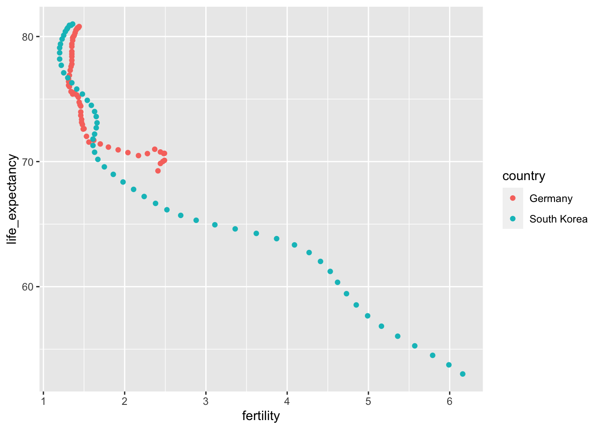
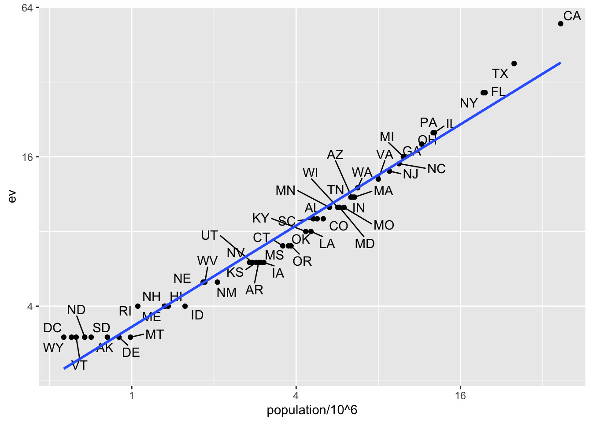
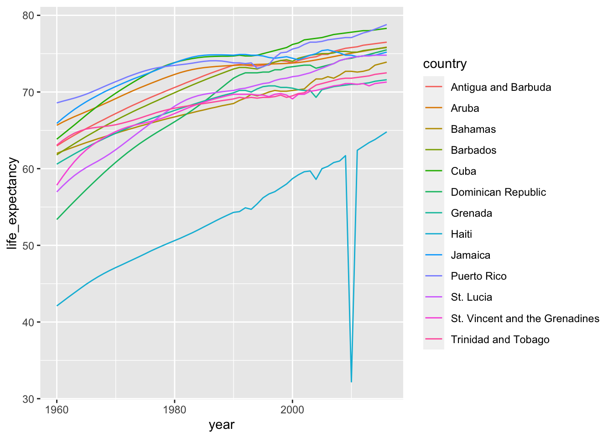
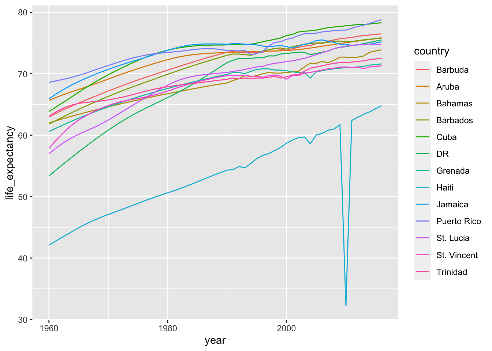

fn <- system.file("extdata", "RD-Mortality-Report_2015-18-180531.pdf", package = "dslabs")
system2("open", fn)13 Wrangling
On September 20, 2017 Hurricane María made landfall in Puerto Rico. Anecdotal reports pointed to a dire situation. Many did not have power, few have running water, and some have no way to communicate. On October 3 of that year the president of the USA visited Puerto Rico. In a press conference the governor states that the death count is 16. A CNN article reporting on this stated
“Every death is a horror,” Trump said, “but if you look at a real catastrophe like Katrina and you look at the tremendous – hundreds and hundreds of people that died – and you look at what happened here with, really, a storm that was just totally overpowering … no one has ever seen anything like this.” “What is your death count?” he asked as he turned to Puerto Rico Gov. Ricardo Rosselló. “17?” “16,” Rosselló answered. “16 people certified,” Trump said. “Sixteen people versus in the thousands. You can be very proud of all of your people and all of our people working together.
Mortality data was not made publicly available until June 6. At this time the following dataset was made available:
Part of the process of analyzing the data is to extract it from this PDF. To conduct a complete analysis we will also need to add population data.
We can start by reading the pdf into R:
library(pdftools)Using poppler version 22.02.0fn <- system.file("extdata", "RD-Mortality-Report_2015-18-180531.pdf", package = "dslabs")
dat <- pdf_text(fn)
dat <- strsplit(dat, "\n")We will go over data wrangling tasks that we will need to facilitate this data analysis: reshaping data, joining tables, and string processing.
13.1 Reshaping data
library(tidyverse)
library(dslabs)
path <- system.file("extdata", package = "dslabs")
filename <- file.path(path, "fertility-two-countries-example.csv")
wide_data <- read_csv(filename)13.1.1 pivot_longer
wide_data |> pivot_longer(`1960`:`2015`)# A tibble: 112 × 3
country name value
<chr> <chr> <dbl>
1 Germany 1960 2.41
2 Germany 1961 2.44
3 Germany 1962 2.47
4 Germany 1963 2.49
5 Germany 1964 2.49
6 Germany 1965 2.48
7 Germany 1966 2.44
8 Germany 1967 2.37
9 Germany 1968 2.28
10 Germany 1969 2.17
# ℹ 102 more rowsWe can also use the pipe like this:
new_tidy_data <- wide_data |>
pivot_longer(`1960`:`2015`, names_to = "year", values_to = "fertility")
head(new_tidy_data)# A tibble: 6 × 3
country year fertility
<chr> <chr> <dbl>
1 Germany 1960 2.41
2 Germany 1961 2.44
3 Germany 1962 2.47
4 Germany 1963 2.49
5 Germany 1964 2.49
6 Germany 1965 2.48Usually its easier to name the columns not to be pivoted.
new_tidy_data <- wide_data |>
pivot_longer(-country, names_to = "year", values_to = "fertility")The new_tidy_data object looks like the original tidy_data we defined this way
tidy_data <- gapminder |>
filter(country %in% c("South Korea", "Germany") & !is.na(fertility)) |>
select(country, year, fertility)with just one minor difference. Can you spot it? Look at the data type of the year column:
class(tidy_data$year)[1] "integer"class(new_tidy_data$year)[1] "character"The pivot_longer function assumes that column names are characters. So we need a bit more wrangling before we are ready to make a plot. We need to convert the year column to be numbers:
new_tidy_data <- wide_data |>
pivot_longer(-country, names_to = "year", values_to = "fertility") |>
mutate(year = as.integer(year))Now that the data is tidy, we can use this relatively simple ggplot code:
new_tidy_data |> ggplot(aes(year, fertility, color = country)) +
geom_point()13.1.2 pivot_wider
new_wide_data <- new_tidy_data |>
pivot_wider(names_from = year, values_from = fertility)
select(new_wide_data, country, `1960`:`1967`)# A tibble: 2 × 9
country `1960` `1961` `1962` `1963` `1964` `1965` `1966` `1967`
<chr> <dbl> <dbl> <dbl> <dbl> <dbl> <dbl> <dbl> <dbl>
1 Germany 2.41 2.44 2.47 2.49 2.49 2.48 2.44 2.37
2 South Korea 6.16 5.99 5.79 5.57 5.36 5.16 4.99 4.85Similar to pivot_wider, names_from and values_from default to name and value.
13.1.3 separate
The data wrangling shown above was simple compared to what is usually required. In our example spreadsheet files, we include an illustration that is slightly more complicated. It contains two variables: life expectancy and fertility. However, the way it is stored is not tidy and, as we will explain, not optimal.
path <- system.file("extdata", package = "dslabs")
filename <- "life-expectancy-and-fertility-two-countries-example.csv"
filename <- file.path(path, filename)
raw_dat <- read_csv(filename)
select(raw_dat, 1:5)# A tibble: 2 × 5
country `1960_fertility` `1960_life_expectancy` `1961_fertility`
<chr> <dbl> <dbl> <dbl>
1 Germany 2.41 69.3 2.44
2 South Korea 6.16 53.0 5.99
# ℹ 1 more variable: `1961_life_expectancy` <dbl>dat <- raw_dat |> pivot_longer(-country)
head(dat)# A tibble: 6 × 3
country name value
<chr> <chr> <dbl>
1 Germany 1960_fertility 2.41
2 Germany 1960_life_expectancy 69.3
3 Germany 1961_fertility 2.44
4 Germany 1961_life_expectancy 69.8
5 Germany 1962_fertility 2.47
6 Germany 1962_life_expectancy 70.0 The result is not exactly what we refer to as tidy since each observation is associated with two, not one, rows. We want to have the values from the two variables, fertility and life expectancy, in two separate columns. The first challenge to achieve this is to separate the name column into the year and the variable type. Notice that the entries in this column separate the year from the variable name with an underscore:
dat$name[1:5][1] "1960_fertility" "1960_life_expectancy" "1961_fertility"
[4] "1961_life_expectancy" "1962_fertility" Encoding multiple variables in a column name is such a common problem that the readr package includes a function to separate these columns into two or more. Apart from the data, the separate function takes three arguments: the name of the column to be separated, the names to be used for the new columns, and the character that separates the variables. So, a first attempt at this is:
dat |> separate(name, c("year", "name"), "_")Because _ is the default separator assumed by separate, we do not have to include it in the code:
dat |> separate(name, c("year", "name"))Warning: Expected 2 pieces. Additional pieces discarded in 112 rows [2, 4, 6, 8, 10, 12,
14, 16, 18, 20, 22, 24, 26, 28, 30, 32, 34, 36, 38, 40, ...].# A tibble: 224 × 4
country year name value
<chr> <chr> <chr> <dbl>
1 Germany 1960 fertility 2.41
2 Germany 1960 life 69.3
3 Germany 1961 fertility 2.44
4 Germany 1961 life 69.8
5 Germany 1962 fertility 2.47
6 Germany 1962 life 70.0
7 Germany 1963 fertility 2.49
8 Germany 1963 life 70.1
9 Germany 1964 fertility 2.49
10 Germany 1964 life 70.7
# ℹ 214 more rowsWe get a warning. Here we tell it to fill the column on the right:
var_names <- c("year", "first_variable_name", "second_variable_name")
dat |> separate(name, var_names, fill = "right")# A tibble: 224 × 5
country year first_variable_name second_variable_name value
<chr> <chr> <chr> <chr> <dbl>
1 Germany 1960 fertility <NA> 2.41
2 Germany 1960 life expectancy 69.3
3 Germany 1961 fertility <NA> 2.44
4 Germany 1961 life expectancy 69.8
5 Germany 1962 fertility <NA> 2.47
6 Germany 1962 life expectancy 70.0
7 Germany 1963 fertility <NA> 2.49
8 Germany 1963 life expectancy 70.1
9 Germany 1964 fertility <NA> 2.49
10 Germany 1964 life expectancy 70.7
# ℹ 214 more rowsHowever, if we read the separate help file, we find that a better approach is to merge the last two variables when there is an extra separation:
dat |> separate(name, c("year", "name"), extra = "merge")# A tibble: 224 × 4
country year name value
<chr> <chr> <chr> <dbl>
1 Germany 1960 fertility 2.41
2 Germany 1960 life_expectancy 69.3
3 Germany 1961 fertility 2.44
4 Germany 1961 life_expectancy 69.8
5 Germany 1962 fertility 2.47
6 Germany 1962 life_expectancy 70.0
7 Germany 1963 fertility 2.49
8 Germany 1963 life_expectancy 70.1
9 Germany 1964 fertility 2.49
10 Germany 1964 life_expectancy 70.7
# ℹ 214 more rowsThis achieves the separation we wanted. However, we are not done yet. We need to create a column for each variable. As we learned, the pivot_wider function can do this:
dat |>
separate(name, c("year", "name"), extra = "merge") |>
pivot_wider() |>
mutate(year = as.integer(year)) |>
ggplot(aes(fertility, life_expectancy, color = country)) + geom_point()
The data is now in tidy format with one row for each observation with three variables: year, fertility, and life expectancy.
13.1.4 unite
It is sometimes useful to do the inverse of separate, unite two columns into one. To demonstrate how to use unite, we show code that, although not the optimal approach, serves as an illustration. Suppose that we did not know about extra and used this command to separate:
var_names <- c("year", "first_variable_name", "second_variable_name")
dat |>
separate(name, var_names, fill = "right")# A tibble: 224 × 5
country year first_variable_name second_variable_name value
<chr> <chr> <chr> <chr> <dbl>
1 Germany 1960 fertility <NA> 2.41
2 Germany 1960 life expectancy 69.3
3 Germany 1961 fertility <NA> 2.44
4 Germany 1961 life expectancy 69.8
5 Germany 1962 fertility <NA> 2.47
6 Germany 1962 life expectancy 70.0
7 Germany 1963 fertility <NA> 2.49
8 Germany 1963 life expectancy 70.1
9 Germany 1964 fertility <NA> 2.49
10 Germany 1964 life expectancy 70.7
# ℹ 214 more rowsWe can achieve the same final result by uniting the second and third columns, then pivoting the columns and renaming fertility_NA to fertility:
dat |>
separate(name, var_names, fill = "right") |>
unite(name, first_variable_name, second_variable_name) |>
pivot_wider() |>
rename(fertility = fertility_NA)# A tibble: 112 × 4
country year fertility life_expectancy
<chr> <chr> <dbl> <dbl>
1 Germany 1960 2.41 69.3
2 Germany 1961 2.44 69.8
3 Germany 1962 2.47 70.0
4 Germany 1963 2.49 70.1
5 Germany 1964 2.49 70.7
6 Germany 1965 2.48 70.6
7 Germany 1966 2.44 70.8
8 Germany 1967 2.37 71.0
9 Germany 1968 2.28 70.6
10 Germany 1969 2.17 70.5
# ℹ 102 more rows13.2 Joining tables
The information we need for a given analysis may not be just in one table. For example, when forecasting elections we used the function left_join to combine the information from two tables. Here we use a simpler example to illustrate the general challenge of combining tables.
Suppose we want to explore the relationship between population size for US states and electoral votes. We have the population size in this table:
library(tidyverse)
library(dslabs)
head(murders) state abb region population total
1 Alabama AL South 4779736 135
2 Alaska AK West 710231 19
3 Arizona AZ West 6392017 232
4 Arkansas AR South 2915918 93
5 California CA West 37253956 1257
6 Colorado CO West 5029196 65and electoral votes in this one:
head(results_us_election_2016) state electoral_votes clinton trump others
1 California 55 61.7 31.6 6.7
2 Texas 38 43.2 52.2 4.5
3 Florida 29 47.8 49.0 3.2
4 New York 29 59.0 36.5 4.5
5 Illinois 20 55.8 38.8 5.4
6 Pennsylvania 20 47.9 48.6 3.6Just concatenating these two tables together will not work since the order of the states is not the same.
identical(results_us_election_2016$state, murders$state)[1] FALSEThe join functions, described below, are designed to handle this challenge.
13.2.1 Joins
The join functions in the dplyr package make sure that the tables are combined so that matching rows are together. If you know SQL, you will see that the approach and syntax is very similar. The general idea is that one needs to identify one or more columns that will serve to match the two tables. Then a new table with the combined information is returned. Notice what happens if we join the two tables above by state using left_join (we will remove the others column and rename electoral_votes so that the tables fit on the page):
tab <- left_join(murders, results_us_election_2016, by = "state") |>
select(-others) |> rename(ev = electoral_votes)
head(tab) state abb region population total ev clinton trump
1 Alabama AL South 4779736 135 9 34.4 62.1
2 Alaska AK West 710231 19 3 36.6 51.3
3 Arizona AZ West 6392017 232 11 45.1 48.7
4 Arkansas AR South 2915918 93 6 33.7 60.6
5 California CA West 37253956 1257 55 61.7 31.6
6 Colorado CO West 5029196 65 9 48.2 43.3The data has been successfully joined and we can now, for example, make a plot to explore the relationship:
library(ggrepel)
tab |> ggplot(aes(population/10^6, ev)) +
geom_point() +
geom_text_repel(aes(label = abb), max.overlaps = 20) +
scale_x_continuous(trans = "log2") +
scale_y_continuous(trans = "log2") +
geom_smooth(method = "lm", se = FALSE)
We see the relationship is close to linear with about 2 electoral votes for every million persons, but with very small states getting higher ratios.
In practice, it is not always the case that each row in one table has a matching row in the other. For this reason, we have several versions of join. To illustrate this challenge, we will take subsets of the tables above. We create the tables tab1 and tab2 so that they have some states in common but not all:
tab_1 <- slice(murders, 1:6) |> select(state, population)
tab_1 state population
1 Alabama 4779736
2 Alaska 710231
3 Arizona 6392017
4 Arkansas 2915918
5 California 37253956
6 Colorado 5029196tab_2 <- results_us_election_2016 |>
filter(state %in% c("Alabama", "Alaska", "Arizona",
"California", "Connecticut", "Delaware")) |>
select(state, electoral_votes) |> rename(ev = electoral_votes)
tab_2 state ev
1 California 55
2 Arizona 11
3 Alabama 9
4 Connecticut 7
5 Alaska 3
6 Delaware 3We will use these two tables as examples in the next sections.
13.2.1.1 Left join
Suppose we want a table like tab_1, but adding electoral votes to whatever states we have available. For this, we use left_join with tab_1 as the first argument. We specify which column to use to match with the by argument.
left_join(tab_1, tab_2, by = "state") state population ev
1 Alabama 4779736 9
2 Alaska 710231 3
3 Arizona 6392017 11
4 Arkansas 2915918 NA
5 California 37253956 55
6 Colorado 5029196 NANote that NAs are added to the two states not appearing in tab_2. Also, notice that this function, as well as all the other joins, can receive the first arguments through the pipe:
tab_1 |> left_join(tab_2, by = "state")13.2.1.2 Right join
If instead of a table with the same rows as first table, we want one with the same rows as second table, we can use right_join:
tab_1 |> right_join(tab_2, by = "state") state population ev
1 Alabama 4779736 9
2 Alaska 710231 3
3 Arizona 6392017 11
4 California 37253956 55
5 Connecticut NA 7
6 Delaware NA 3Now the NAs are in the column coming from tab_1.
13.2.1.3 Inner join
If we want to keep only the rows that have information in both tables, we use inner_join. You can think of this as an intersection:
inner_join(tab_1, tab_2, by = "state") state population ev
1 Alabama 4779736 9
2 Alaska 710231 3
3 Arizona 6392017 11
4 California 37253956 5513.2.1.4 Full join
If we want to keep all the rows and fill the missing parts with NAs, we can use full_join. You can think of this as a union:
full_join(tab_1, tab_2, by = "state") state population ev
1 Alabama 4779736 9
2 Alaska 710231 3
3 Arizona 6392017 11
4 Arkansas 2915918 NA
5 California 37253956 55
6 Colorado 5029196 NA
7 Connecticut NA 7
8 Delaware NA 313.2.1.5 Semi join
The semi_join function lets us keep the part of first table for which we have information in the second. It does not add the columns of the second:
semi_join(tab_1, tab_2, by = "state") state population
1 Alabama 4779736
2 Alaska 710231
3 Arizona 6392017
4 California 3725395613.2.1.6 Anti join
The function anti_join is the opposite of semi_join. It keeps the elements of the first table for which there is no information in the second:
anti_join(tab_1, tab_2, by = "state") state population
1 Arkansas 2915918
2 Colorado 502919613.2.2 Set operators
You can use set operators on data frames:
13.2.2.1 Intersect
You can take intersections of vectors of any type, such as numeric:
intersect(1:10, 6:15)[1] 6 7 8 9 10or characters:
intersect(c("a","b","c"), c("b","c","d"))[1] "b" "c"tab_1 <- tab[1:5,]
tab_2 <- tab[3:7,]
dplyr::intersect(tab_1, tab_2) state abb region population total ev clinton trump
1 Arizona AZ West 6392017 232 11 45.1 48.7
2 Arkansas AR South 2915918 93 6 33.7 60.6
3 California CA West 37253956 1257 55 61.7 31.613.2.2.2 Union
Similarly union takes the union of vectors. For example:
union(1:10, 6:15) [1] 1 2 3 4 5 6 7 8 9 10 11 12 13 14 15union(c("a","b","c"), c("b","c","d"))[1] "a" "b" "c" "d"The dplyr package includes a version of union that combines all the rows of two tables with the same column names.
tab_1 <- tab[1:5,]
tab_2 <- tab[3:7,]
dplyr::union(tab_1, tab_2) state abb region population total ev clinton trump
1 Alabama AL South 4779736 135 9 34.4 62.1
2 Alaska AK West 710231 19 3 36.6 51.3
3 Arizona AZ West 6392017 232 11 45.1 48.7
4 Arkansas AR South 2915918 93 6 33.7 60.6
5 California CA West 37253956 1257 55 61.7 31.6
6 Colorado CO West 5029196 65 9 48.2 43.3
7 Connecticut CT Northeast 3574097 97 7 54.6 40.913.2.2.3 setdiff
The set difference between a first and second argument can be obtained with setdiff. Unlike intersect and union, this function is not symmetric:
setdiff(1:10, 6:15)[1] 1 2 3 4 5setdiff(6:15, 1:10)[1] 11 12 13 14 15As with the functions shown above, dplyr has a version for data frames:
tab_1 <- tab[1:5,]
tab_2 <- tab[3:7,]
dplyr::setdiff(tab_1, tab_2) state abb region population total ev clinton trump
1 Alabama AL South 4779736 135 9 34.4 62.1
2 Alaska AK West 710231 19 3 36.6 51.313.2.2.4 setequal
Finally, the function setequal tells us if two sets are the same, regardless of order. So notice that:
setequal(1:5, 1:6)[1] FALSEbut:
setequal(1:5, 5:1)[1] TRUEWhen applied to data frames that are not equal, regardless of order, the dplyr version provides a useful message letting us know how the sets are different:
dplyr::setequal(tab_1, tab_2)[1] FALSE13.3 String processing
13.3.1 The stringr package
library(tidyverse)
library(stringr)13.3.2 Case study: self-reported heights
The dslabs package includes the raw data from which the heights dataset was obtained. You can load it like this:
library(dslabs)
head(reported_heights) time_stamp sex height
1 2014-09-02 13:40:36 Male 75
2 2014-09-02 13:46:59 Male 70
3 2014-09-02 13:59:20 Male 68
4 2014-09-02 14:51:53 Male 74
5 2014-09-02 15:16:15 Male 61
6 2014-09-02 15:16:16 Female 65class(reported_heights$height)[1] "character"If we try to parse it into numbers, we get a warning:
x <- as.numeric(reported_heights$height)Warning: NAs introduced by coercionAlthough most values appear to be height in inches as requested:
head(x)[1] 75 70 68 74 61 65we do end up with many NAs:
sum(is.na(x))[1] 81We can see some of the entries that are not successfully converted by using filter to keep only the entries resulting in NAs:
reported_heights |>
mutate(new_height = as.numeric(height)) |>
filter(is.na(new_height)) |>
head(n = 10) time_stamp sex height new_height
1 2014-09-02 15:16:28 Male 5' 4" NA
2 2014-09-02 15:16:37 Female 165cm NA
3 2014-09-02 15:16:52 Male 5'7 NA
4 2014-09-02 15:16:56 Male >9000 NA
5 2014-09-02 15:16:56 Male 5'7" NA
6 2014-09-02 15:17:09 Female 5'3" NA
7 2014-09-02 15:18:00 Male 5 feet and 8.11 inches NA
8 2014-09-02 15:19:48 Male 5'11 NA
9 2014-09-04 00:46:45 Male 5'9'' NA
10 2014-09-04 10:29:44 Male 5'10'' NAWe permit a range that covers about 99.9999% of the adult population. We also use suppressWarnings to avoid the warning message we know as.numeric will gives us.
not_inches <- function(x, smallest = 50, tallest = 84){
inches <- suppressWarnings(as.numeric(x))
ind <- is.na(inches) | inches < smallest | inches > tallest
ind
}We apply this function and find the number of problematic entries:
problems <- reported_heights |>
filter(not_inches(height)) |>
pull(height)
problems [1] "6" "5' 4\"" "5.3"
[4] "165cm" "511" "6"
[7] "2" "5'7" ">9000"
[10] "5'7\"" "5'3\"" "5 feet and 8.11 inches"
[13] "5.25" "5'11" "5.5"
[16] "11111" "5'9''" "6"
[19] "6.5" "150" "5'10''"
[22] "103.2" "5.8" "19"
[25] "5" "5.6" "175"
[28] "177" "300" "5,3"
[31] "6'" "6" "5.9"
[34] "6,8" "5' 10" "5.5"
[37] "178" "163" "6.2"
[40] "175" "Five foot eight inches" "6.2"
[43] "5.8" "5.1" "178"
[46] "165" "5.11" "5'5\""
[49] "165" "180" "5'2\""
[52] "5.75" "169" "5,4"
[55] "7" "5.4" "157"
[58] "6.1" "169" "5'3"
[61] "5.6" "214" "183"
[64] "5.6" "6" "162"
[67] "178" "180" "5'10''"
[70] "170" "5'3''" "178"
[73] "0.7" "190" "5.4"
[76] "184" "5'7''" "5.9"
[79] "5'12" "5.6" "5.6"
[82] "184" "6" "167"
[85] "2'33" "5'11" "5'3\""
[88] "5.5" "5.2" "180"
[91] "5.5" "5.5" "6.5"
[94] "5,8" "180" "183"
[97] "170" "5'6''" "172"
[100] "612" "5.11" "168"
[103] "5'4" "1,70" "172"
[106] "87" "5.5" "176"
[109] "5'7.5''" "5'7.5''" "111"
[112] "5'2\"" "173" "174"
[115] "176" "175" "5' 7.78\""
[118] "6.7" "12" "6"
[121] "5.1" "5.6" "5.5"
[124] "yyy" "5.2" "5'5"
[127] "5'8" "5'6" "5 feet 7inches"
[130] "89" "5.6" "5.7"
[133] "183" "172" "34"
[136] "25" "6" "5.9"
[139] "168" "6.5" "170"
[142] "175" "6" "22"
[145] "5.11" "684" "6"
[148] "1" "1" "6*12"
[151] "5 .11" "87" "162"
[154] "165" "184" "6"
[157] "173" "1.6" "172"
[160] "170" "5.7" "5.5"
[163] "174" "170" "160"
[166] "120" "120" "23"
[169] "192" "5 11" "167"
[172] "150" "1.7" "174"
[175] "5.8" "6" "5'4"
[178] "5'8\"" "5'5" "5.8"
[181] "5.1" "5.11" "5.7"
[184] "5'7" "5'6" "5'11\""
[187] "5'7\"" "5'7" "172"
[190] "5'8" "180" "5' 11\""
[193] "5" "180" "180"
[196] "6'1\"" "5.9" "5.2"
[199] "5.5" "69\"" "5' 7\""
[202] "5'10''" "5.51" "5'10"
[205] "5'10" "5ft 9 inches" "5 ft 9 inches"
[208] "5'2" "5'11" "5.8"
[211] "5.7" "167" "168"
[214] "6" "6.1" "5'11''"
[217] "5.69" "178" "182"
[220] "164" "5'8\"" "185"
[223] "6" "86" "5.7"
[226] "708,661" "5.25" "5.5"
[229] "5 feet 6 inches" "5'10''" "172"
[232] "6" "5'8" "160"
[235] "6'3\"" "649,606" "10000"
[238] "5.1" "152" "1"
[241] "180" "728,346" "175"
[244] "158" "173" "164"
[247] "6 04" "169" "0"
[250] "185" "168" "5'9"
[253] "169" "5'5''" "174"
[256] "6.3" "179" "5'7\""
[259] "5.5" "6" "6"
[262] "170" "6" "172"
[265] "158" "100" "159"
[268] "190" "5.7" "170"
[271] "158" "6'4\"" "180"
[274] "5.57" "5'4" "210"
[277] "88" "6" "162"
[280] "170 cm" "5.7" "170"
[283] "157" "186" "170"
[286] "7,283,465" "5" "5"
[289] "34" "161" "5'6"
[292] "5'6" 13.3.3 Regular expressions
13.3.3.1 Special characters
Now let’s consider a slightly more complicated example. Which of the following strings contain the pattern cm or inches?
yes <- c("180 cm", "70 inches")
no <- c("180", "70''")
s <- c(yes, no)str_detect(s, "cm") | str_detect(s, "inches")[1] TRUE TRUE FALSE FALSEHowever, we don’t need to do this. The main feature that distinguishes the regex language from plain strings is that we can use special characters. These are characters with a meaning. We start by introducing | which means or. So if we want to know if either cm or inches appears in the strings, we can use the regex cm|inches:
str_detect(s, "cm|inches")[1] TRUE TRUE FALSE FALSEand obtain the correct answer.
Another special character that will be useful for identifying feet and inches values is \d which means any digit: 0, 1, 2, 3, 4, 5, 6, 7, 8, 9. The backslash is used to distinguish it from the character d. In R, we have to escape the backslash \ so we actually have to use \\d to represent digits. Here is an example:
yes <- c("5", "6", "5'10", "5 feet", "4'11")
no <- c("", ".", "Five", "six")
s <- c(yes, no)
pattern <- "\\d"
str_detect(s, pattern)[1] TRUE TRUE TRUE TRUE TRUE FALSE FALSE FALSE FALSEWe take this opportunity to introduce the str_view_all function, which is helpful for troubleshooting as it shows us the first match for each string:
str_view_all(s, pattern)Warning: `str_view()` was deprecated in stringr 1.5.0.
ℹ Please use `str_view_all()` instead.[1] │ <5>
[2] │ <6>
[3] │ <5>'<1><0>
[4] │ <5> feet
[5] │ <4>'<1><1>
[6] │
[7] │ .
[8] │ Five
[9] │ sixand str_view_all shows us all the matches, so 3'2 has two matches and 5'10 has three.
str_view_all(s, pattern)[1] │ <5>
[2] │ <6>
[3] │ <5>'<1><0>
[4] │ <5> feet
[5] │ <4>'<1><1>
[6] │
[7] │ .
[8] │ Five
[9] │ sixThere are many other special characters. We will learn some others below, but you can see most or all of them in the cheat sheet1 mentioned earlier.
Finally, a useful special character is \w which stands for word character and it matches any letter, number, or underscore. It is equivalent to [a-zA-Z0-9_].
13.3.3.2 Character classes
Character classes are used to define a series of characters that can be matched. We define character classes with square brackets []. So, for example, if we want the pattern to match only if we have a 5 or a 6, we use the regex [56]:
str_view_all(s, "[56]")[1] │ <5>
[2] │ <6>
[3] │ <5>'10
[4] │ <5> feet
[5] │ 4'11
[6] │
[7] │ .
[8] │ Five
[9] │ sixSuppose we want to match values between 4 and 7. A common way to define character classes is with ranges. So, for example, [0-9] is equivalent to \\d. The pattern we want is therefore [4-7].
yes <- as.character(4:7)
no <- as.character(1:3)
s <- c(yes, no)
str_detect(s, "[4-7]")[1] TRUE TRUE TRUE TRUE FALSE FALSE FALSEHowever, it is important to know that in regex everything is a character; there are no numbers. So 4 is the character 4 not the number four. Notice, for example, that [1-20] does not mean 1 through 20, it means the characters 1 through 2 or the character 0. So [1-20] simply means the character class composed of 0, 1, and 2.
Keep in mind that characters do have an order and the digits do follow the numeric order. So 0 comes before 1 which comes before 2 and so on. For the same reason, we can define lower case letters as [a-z], upper case letters as [A-Z], and [a-zA-z] as both.
13.3.3.3 Anchors
What if we want a match when we have exactly 1 digit? This will be useful in our case study since feet are never more than 1 digit so a restriction will help us. One way to do this with regex is by using anchors, which let us define patterns that must start or end at a specific place. The two most common anchors are ^ and $ which represent the beginning and end of a string, respectively. So the pattern ^\\d$ is read as “start of the string followed by one digit followed by end of string”.
This pattern now only detects the strings with exactly one digit:
pattern <- "^\\d$"
yes <- c("1", "5", "9")
no <- c("12", "123", " 1", "a4", "b")
s <- c(yes, no)
str_view_all(s, pattern)[1] │ <1>
[2] │ <5>
[3] │ <9>
[4] │ 12
[5] │ 123
[6] │ 1
[7] │ a4
[8] │ bThe 1 does not match because it does not start with the digit but rather with a space, which is actually not easy to see.
13.3.3.4 Quantifiers
For the inches part, we can have one or two digits. This can be specified in regex with quantifiers. This is done by following the pattern with curly brackets containing the number of times the previous entry can be repeated. We use an example to illustrate. The pattern for one or two digits is:
pattern <- "^\\d{1,2}$"
yes <- c("1", "5", "9", "12")
no <- c("123", "a4", "b")
str_view_all(c(yes, no), pattern)[1] │ <1>
[2] │ <5>
[3] │ <9>
[4] │ <12>
[5] │ 123
[6] │ a4
[7] │ b13.3.3.5 White space \s
Another problem we have are spaces. For example, our pattern does not match 5' 4" because there is a space between ' and 4 which our pattern does not permit. Spaces are characters and R does not ignore them:
identical("Hi", "Hi ")[1] FALSEIn regex, \s represents white space. To find patterns like 5' 4, we can change our pattern to:
pattern_2 <- "^[4-7]'\\s\\d{1,2}\"$"
str_subset(problems, pattern_2)[1] "5' 4\"" "5' 11\"" "5' 7\"" However, this will not match the patterns with no space. So do we need more than one regex pattern? It turns out we can use a quantifier for this as well.
13.3.3.6 Quantifiers: *, ?, +
We want the pattern to permit spaces but not require them. Even if there are several spaces, like in this example 5' 4, we still want it to match. There is a quantifier for exactly this purpose. In regex, the character * means zero or more instances of the previous character. Here is an example:
yes <- c("AB", "A1B", "A11B", "A111B", "A1111B")
no <- c("A2B", "A21B")
str_detect(yes, "A1*B")[1] TRUE TRUE TRUE TRUE TRUEstr_detect(no, "A1*B")[1] FALSE FALSEThe above matches the first string which has zero 1s and all the strings with one or more 1. We can then improve our pattern by adding the * after the space character \s.
There are two other similar quantifiers. For none or once, we can use ?, and for one or more, we can use +. You can see how they differ with this example:
data.frame(string = c("AB", "A1B", "A11B", "A111B", "A1111B"),
none_or_more = str_detect(yes, "A1*B"),
nore_or_once = str_detect(yes, "A1?B"),
once_or_more = str_detect(yes, "A1+B")) string none_or_more nore_or_once once_or_more
1 AB TRUE TRUE FALSE
2 A1B TRUE TRUE TRUE
3 A11B TRUE FALSE TRUE
4 A111B TRUE FALSE TRUE
5 A1111B TRUE FALSE TRUEWe will actually use all three in our reported heights example, but we will see these in a later section.
13.3.3.7 Not
To specify patterns that we do not want to detect, we can use the ^ symbol but only inside square brackets. Remember that outside the square bracket ^ means the start of the string. So, for example, if we want to detect digits that are preceded by anything except a letter we can do the following:
pattern <- "[^a-zA-Z]\\d"
yes <- c(".3", "+2", "-0","*4")
no <- c("A3", "B2", "C0", "E4")
str_detect(yes, pattern)[1] TRUE TRUE TRUE TRUEstr_detect(no, pattern)[1] FALSE FALSE FALSE FALSEAnother way to generate a pattern that searches for everything except is to use the upper case of the special character. For example \\D means anything other than a digit, \\S means anything except a space, and so on.
13.3.3.8 Lookarounds
Lookarounds provide a way to ask for one or more conditions to be satisfied without moving the search forward or matching it. For example, you might want to check for multiple conditions and if they are matched, then return the pattern or part of the pattern that matched. An example: check if a string satisfies the conditions for a password and if it does return the password. Suppose the conditions are 1) 8-16 word characters, 2) starts with a letter, and 3) has at least one digit.
There are four types of lookarounds: lookahead (?=pattern), lookbehind (?<=pattern), negative lookahead (?!pattern), and negative lookbehind (?<!pattern). You can concatenate them to check for multiple conditions so for our example we can write it like this:
pattern <- "(?=\\w{8,16})(?=^[a-z|A-Z].*)(?=.*\\d+.*).*"
yes <- c("Ihatepasswords1", "password1234")
no <- c("sh0rt", "Ihaterpasswords", "7X%9,N`yrYG92b7")
str_detect(yes, pattern)[1] TRUE TRUEstr_detect(no, pattern)[1] FALSE FALSE FALSEstr_extract(yes, pattern)[1] "Ihatepasswords1" "password1234" 13.3.3.9 Groups
Groups are a powerful aspect of regex that permits the extraction of values. Groups are defined using parentheses. They don’t affect the pattern matching per se. Instead, it permits tools to identify specific parts of the pattern so we can extract them.
We want to change heights written like 5.6 to 5'6.
To avoid changing patterns such as 70.2, we will require that the first digit be between 4 and 7 [4-7] and that the second be none or more digits \\d*. Let’s start by defining a simple pattern that matches this:
pattern_without_groups <- "^[4-7],\\d*$"We want to extract the digits so we can then form the new version using a period. These are our two groups, so we encapsulate them with parentheses:
pattern_with_groups <- "^([4-7]),(\\d*)$"We encapsulate the part of the pattern that matches the parts we want to keep for later use. Adding groups does not affect the detection, since it only signals that we want to save what is captured by the groups. Note that both patterns return the same result when using str_detect:
yes <- c("5,9", "5,11", "6,", "6,1")
no <- c("5'9", ",", "2,8", "6.1.1")
s <- c(yes, no)
str_detect(s, pattern_without_groups)[1] TRUE TRUE TRUE TRUE FALSE FALSE FALSE FALSEstr_detect(s, pattern_with_groups)[1] TRUE TRUE TRUE TRUE FALSE FALSE FALSE FALSEOnce we define groups, we can use the function str_match to extract the values these groups define:
str_match(s, pattern_with_groups) [,1] [,2] [,3]
[1,] "5,9" "5" "9"
[2,] "5,11" "5" "11"
[3,] "6," "6" ""
[4,] "6,1" "6" "1"
[5,] NA NA NA
[6,] NA NA NA
[7,] NA NA NA
[8,] NA NA NA Notice that the second and third columns contain feet and inches, respectively. The first column is the part of the string matching the pattern. If no match occurred, we see an NA.
Now we can understand the difference between the functions str_extract and str_match: str_extract extracts only strings that match a pattern, not the values defined by groups:
str_extract(s, pattern_with_groups)[1] "5,9" "5,11" "6," "6,1" NA NA NA NA 13.3.4 Search and replace with regex
Earlier we defined the object problems containing the strings that do not appear to be in inches. We can see that not too many of our problematic strings match the pattern:
pattern <- "^[4-7]'\\d{1,2}\"$"
sum(str_detect(problems, pattern))[1] 14To see why this is, we show some examples that expose why we don’t have more matches:
problems[ c(2, 10, 11, 12, 15)] |> str_view_all(pattern)[1] │ 5' 4"
[2] │ <5'7">
[3] │ <5'3">
[4] │ 5 feet and 8.11 inches
[5] │ 5.5An initial problem we see immediately is that some students wrote out the words “feet” and “inches”. We can see the entries that did this with the str_subset function:
str_subset(problems, "inches")[1] "5 feet and 8.11 inches" "Five foot eight inches" "5 feet 7inches"
[4] "5ft 9 inches" "5 ft 9 inches" "5 feet 6 inches" We also see that some entries used two single quotes '' instead of a double quote ".
str_subset(problems, "''") [1] "5'9''" "5'10''" "5'10''" "5'3''" "5'7''" "5'6''" "5'7.5''"
[8] "5'7.5''" "5'10''" "5'11''" "5'10''" "5'5''" To correct this, we can replace the different ways of representing inches and feet with a uniform symbol. We will use ' for feet, whereas for inches we will simply not use a symbol since some entries were of the form x'y. Now, if we no longer use the inches symbol, we have to change our pattern accordingly:
pattern <- "^[4-7]'\\d{1,2}$"If we do this replacement before the matching, we get many more matches:
problems |>
str_replace("feet|ft|foot", "'") |> # replace feet, ft, foot with '
str_replace("inches|in|''|\"", "") |> # remove all inches symbols
str_detect(pattern) |>
sum()[1] 48However, we still have many cases to go.
Note that in the code above, we leveraged the stringr consistency and used the pipe.
For now, we improve our pattern by adding \\s* in front of and after the feet symbol ' to permit space between the feet symbol and the numbers. Now we match a few more entries:
pattern <- "^[4-7]\\s*'\\s*\\d{1,2}$"
problems |>
str_replace("feet|ft|foot", "'") |> # replace feet, ft, foot with '
str_replace("inches|in|''|\"", "") |> # remove all inches symbols
str_detect(pattern) |>
sum()[1] 5313.3.4.1 Search and replace using groups
Another powerful aspect of groups is that you can refer to the extracted values in a regex when searching and replacing.
The regex special character for the i-th group is \\i. So \\1 is the value extracted from the first group, \\2 the value from the second and so on. As a simple example, note that the following code will replace a comma with period, but only if it is between two digits:
pattern_with_groups <- "^([4-7]),(\\d*)$"
yes <- c("5,9", "5,11", "6,", "6,1")
no <- c("5'9", ",", "2,8", "6.1.1")
s <- c(yes, no)
str_replace(s, pattern_with_groups, "\\1'\\2")[1] "5'9" "5'11" "6'" "6'1" "5'9" "," "2,8" "6.1.1"13.3.5 Trimming
In general, spaces at the start or end of the string are uninformative. These can be particularly deceptive because sometimes they can be hard to see:
s <- "Hi "
cat(s)Hi identical(s, "Hi")[1] FALSEThis is a general enough problem that there is a function dedicated to removing them: str_trim.
str_trim(" 5 ' 9 ")[1] "5 ' 9"13.3.6 Changing lettercase
s <- c("Five feet eight inches")
str_to_lower(s)[1] "five feet eight inches"Other related functions are str_to_upper and str_to_title. We are now ready to define a procedure that converts all the problematic cases to inches.
13.3.7 The extract function
The extract function is a useful tidyverse function for string processing that we will use in our final solution, so we introduce it here. In a previous section, we constructed a regex that lets us identify which elements of a character vector match the feet and inches pattern. However, we want to do more. We want to extract and save the feet and number values so that we can convert them to inches when appropriate.
If we have a simpler case like this:
s <- c("5'10", "6'1")
tab <- data.frame(x = s)In Section Section 13.1.3 we learned about the separate function, which can be used to achieve our current goal:
tab |> separate(x, c("feet", "inches"), sep = "'") feet inches
1 5 10
2 6 1The extract function from the tidyr package lets us use regex groups to extract the desired values. Here is the equivalent to the code above using separate but using extract:
library(tidyr)
tab |> extract(x, c("feet", "inches"), regex = "(\\d)'(\\d{1,2})") feet inches
1 5 10
2 6 1So why do we even need the new function extract? We have seen how small changes can throw off exact pattern matching. Groups in regex give us more flexibility. For example, if we define:
s <- c("5'10", "6'1\"","5'8inches")
tab <- data.frame(x = s)and we only want the numbers, separate fails:
tab |> separate(x, c("feet","inches"), sep = "'", fill = "right") feet inches
1 5 10
2 6 1"
3 5 8inchesHowever, we can use extract. The regex here is a bit more complicated since we have to permit ' with spaces and feet. We also do not want the " included in the value, so we do not include that in the group:
tab |> extract(x, c("feet", "inches"), regex = "(\\d)'(\\d{1,2})") feet inches
1 5 10
2 6 1
3 5 813.3.8 Putting it all together
We are now ready to put it all together and wrangle our reported heights data to try to recover as many heights as possible. The code is complex, but we will break it down into parts.
We start by cleaning up the height column so that the heights are closer to a feet’inches format. We added an original heights column so we can compare before and after.
We now put all of what we have learned together into a function that takes a string vector and tries to convert as many strings as possible to one format. We write a function that puts together what we have done above.
convert_format <- function(s){
s |>
str_replace("feet|foot|ft", "'") |>
str_replace_all("inches|in|''|\"|cm|and", "") |>
str_replace("^([4-7])\\s*[,\\.\\s+]\\s*(\\d*)$", "\\1'\\2") |>
str_replace("^([56])'?$", "\\1'0") |>
str_replace("^([12])\\s*,\\s*(\\d*)$", "\\1\\.\\2") |>
str_trim()
}
library(english)
words_to_numbers <- function(s){
s <- str_to_lower(s)
for (i in 0:11)
s <- str_replace_all(s, words(i), as.character(i))
s
}pattern <- "^([4-7])\\s*'\\s*(\\d+\\.?\\d*)$"
smallest <- 50
tallest <- 84
new_heights <- reported_heights |>
mutate(original = height,
height = words_to_numbers(height) |> convert_format()) |>
extract(height, c("feet", "inches"), regex = pattern, remove = FALSE) |>
mutate_at(c("height", "feet", "inches"), as.numeric) |>
mutate(guess = 12 * feet + inches) |>
mutate(height = case_when(
is.na(height) ~ as.numeric(NA),
between(height, smallest, tallest) ~ height, #inches
between(height/2.54, smallest, tallest) ~ height/2.54, #cm
between(height*100/2.54, smallest, tallest) ~ height*100/2.54, #meters
TRUE ~ as.numeric(NA))) |>
mutate(height = ifelse(is.na(height) &
inches < 12 & between(guess, smallest, tallest),
guess, height)) |>
select(-guess)We can check all the entries we converted by typing:
new_heights |>
filter(not_inches(original)) |>
select(original, height) |>
arrange(height) |>
View()A final observation is that if we look at the shortest students in our course:
new_heights |> arrange(height) |> head(n = 7) time_stamp sex height feet inches original
1 2017-07-04 01:30:25 Male 50.00 NA NA 50
2 2017-09-07 10:40:35 Male 50.00 NA NA 50
3 2014-09-02 15:18:30 Female 51.00 NA NA 51
4 2016-06-05 14:07:20 Female 52.00 NA NA 52
5 2016-06-05 14:07:38 Female 52.00 NA NA 52
6 2014-09-23 03:39:56 Female 53.00 NA NA 53
7 2015-01-07 08:57:29 Male 53.77 NA NA 53.77We see heights of 53, 54, and 55. In the originals, we also have 51 and 52. These short heights are rare and it is likely that the students actually meant 5'1, 5'2, 5'3, 5'4, and 5'5. Because we are not completely sure, we will leave them as reported. The object new_heights contains our final solution for this case study.
13.3.9 String splitting
Another very common data wrangling operation is string splitting. To illustrate how this comes up, we start with an illustrative example. Suppose we did not have the function read_csv or read.csv available to us. We instead have to read a csv file using the base R function readLines like this:
filename <- system.file("extdata/murders.csv", package = "dslabs")
lines <- readLines(filename)This function reads-in the data line-by-line to create a vector of strings. In this case, one string for each row in the spreadsheet. The first six lines are:
lines |> head()[1] "state,abb,region,population,total" "Alabama,AL,South,4779736,135"
[3] "Alaska,AK,West,710231,19" "Arizona,AZ,West,6392017,232"
[5] "Arkansas,AR,South,2915918,93" "California,CA,West,37253956,1257" We want to extract the values that are separated by a comma for each string in the vector. The command str_split does exactly this:
x <- str_split(lines, ",")
x |> head(2)[[1]]
[1] "state" "abb" "region" "population" "total"
[[2]]
[1] "Alabama" "AL" "South" "4779736" "135" 13.3.10 Recoding
Another common operation involving strings is recoding the names of categorical variables. Let’s say you have really long names for your levels and you will be displaying them in plots, you might want to use shorter versions of these names. For example, in character vectors with country names, you might want to change “United States of America” to “USA” and “United Kingdom” to UK, and so on. We can do this with case_when, although the tidyverse offers an option that is specifically designed for this task: the case_match function.
Here is an example that shows how to rename countries with long names:
library(dslabs)Suppose we want to show life expectancy time series by country for the Caribbean:
gapminder |>
filter(region == "Caribbean") |>
ggplot(aes(year, life_expectancy, color = country)) +
geom_line()
gapminder |> filter(region == "Caribbean") |>
mutate(country = case_match(country,
"Antigua and Barbuda" ~ "Barbuda",
"Dominican Republic" ~ "DR",
"St. Vincent and the Grenadines" ~ "St. Vincent",
"Trinidad and Tobago" ~ "Trinidad",
.default = country)) |>
ggplot(aes(year, life_expectancy, color = country)) +
geom_line()
There are other similar functions in other R packages, such as recode_factor and fct_recoder in the forcats package.
13.4 Exercises
- Run the following command to define the
co2_wideobject:
co2_wide <- data.frame(matrix(co2, ncol = 12, byrow = TRUE)) |>
setNames(1:12) |>
mutate(year = as.character(1959:1997))Use the pivot_longer function to wrangle this into a tidy dataset. Call the column with the CO2 measurements co2 and call the month column month. Call the resulting object co2_tidy.
- Plot CO2 versus month with a different curve for each year using this code:
co2_tidy |> ggplot(aes(month, co2, color = year)) + geom_line()If the expected plot is not made, it is probably because co2_tidy$month is not numeric:
class(co2_tidy$month)Rewrite your code to make sure the month column is numeric. Then make the plot.
- What do we learn from this plot?
- CO2 measures increase monotonically from 1959 to 1997.
- CO2 measures are higher in the summer and the yearly average increased from 1959 to 1997.
- CO2 measures appear constant and random variability explains the differences.
- CO2 measures do not have a seasonal trend.
- Now load the
admissionsdata set, which contains admission information for men and women across six majors and keep only the admitted percentage column:
load(admissions)
dat <- admissions |> select(-applicants)If we think of an observation as a major, and that each observation has two variables (men admitted percentage and women admitted percentage) then this is not tidy. Use the pivot_wider function to wrangle into tidy shape: one row for each major.
- Now we will try a more advanced wrangling challenge. We want to wrangle the admissions data so that for each major we have 4 observations:
admitted_men,admitted_women,applicants_menandapplicants_women. The trick we perform here is actually quite common: first usepivot_longerto generate an intermediate data frame and thenpivot_widerto obtain the tidy data we want. We will go step by step in this and the next two exercises.
Use the pivot_longer function to create a tmp data.frame with a column containing the type of observation admitted or applicants. Call the new columns name and value.
Now you have an object
tmpwith columnsmajor,gender,nameandvalue. Note that if you combine thenameandgender, we get the column names we want:admitted_men,admitted_women,applicants_menandapplicants_women. Use the functionuniteto create a new column calledcolumn_name.Now use the
pivot_widerfunction to generate the tidy data with four variables for each major.Now use the pipe to write a line of code that turns
admissionsto the table produced in the previous exercise.Install and load the Lahman library. This database includes data related to baseball teams. It includes summary statistics about how the players performed on offense and defense for several years. It also includes personal information about the players.
The Batting data frame contains the offensive statistics for all players for many years. You can see, for example, the top 10 hitters by running this code:
library(Lahman)
top <- Batting |>
filter(yearID == 2016) |>
arrange(desc(HR)) |>
slice(1:10)
top |> as_tibble()But who are these players? We see an ID, but not the names. The player names are in this table
People |> as_tibble()We can see column names nameFirst and nameLast. Use the left_join function to create a table of the top home run hitters. The table should have playerID, first name, last name, and number of home runs (HR). Rewrite the object top with this new table.
Now use the
Salariesdata frame to add each player’s salary to the table you created in exercise 1. Note that salaries are different every year so make sure to filter for the year 2016, then useright_join. This time show first name, last name, team, HR, and salary.In a previous exercise, we created a tidy version of the
co2dataset:
co2_wide <- data.frame(matrix(co2, ncol = 12, byrow = TRUE)) |>
setNames(1:12) |>
mutate(year = 1959:1997) |>
pivot_longer(-year, names_to = "month", values_to = "co2") |>
mutate(month = as.numeric(month))We want to see if the monthly trend is changing so we are going to remove the year effects and then plot the results. We will first compute the year averages. Use the group_by and summarize to compute the average co2 for each year. Save in an object called yearly_avg.
Now use the
left_joinfunction to add the yearly average to theco2_widedataset. Then compute the residuals: observed co2 measure - yearly average.Make a plot of the seasonal trends by year but only after removing the year effect.
https://www.rstudio.com/wp-content/uploads/2016/09/RegExCheatsheet.pdf↩︎